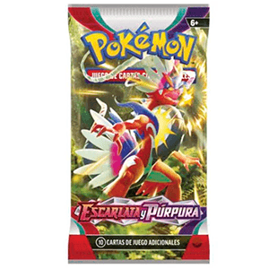
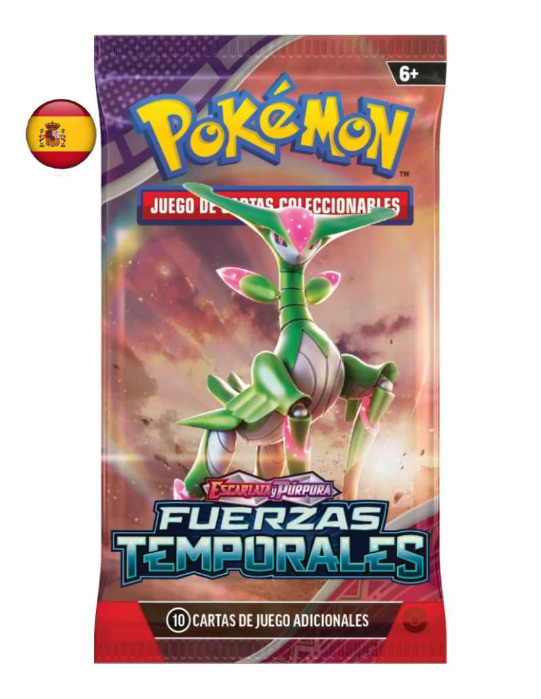
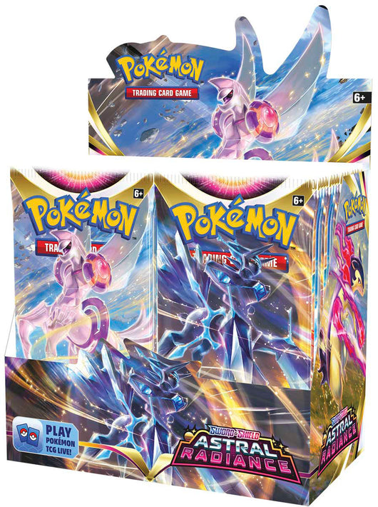
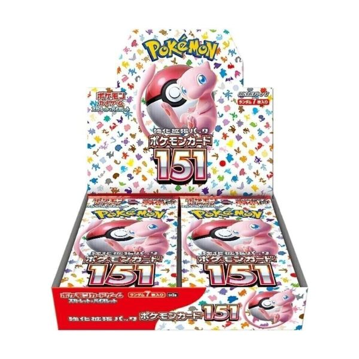

Bienvenido a MasterDeck
Ofrecemos productos de alta calidad.
Sobre Nosotros
MasterDeck nace de la pasión por el coleccionismo y la emoción del universo Pokémon. Nos especializamos en cartas Pokémon originales, ediciones limitadas, productos sellados y artículos exclusivos para jugadores y coleccionistas.
Nos esforzamos por ofrecer productos 100% auténticos, precios competitivos y una atención al cliente cercana y rápida. Tanto si estás empezando como si llevas años en el mundo TCG, en MasterDeck encontrarás lo que buscas.
Servicios
- Venta de cartas individuales y colecciones completas
- Productos sellados: sobres, cajas elite trainer, latas y más
- Mystery Packs con cartas sorpresa
- Servicio de envío protegido para cartas valiosas
- Asesoramiento para gradear tus cartas y preparar envíos a PSA/CGC
Lo más vendido




¡Hazte con todas!